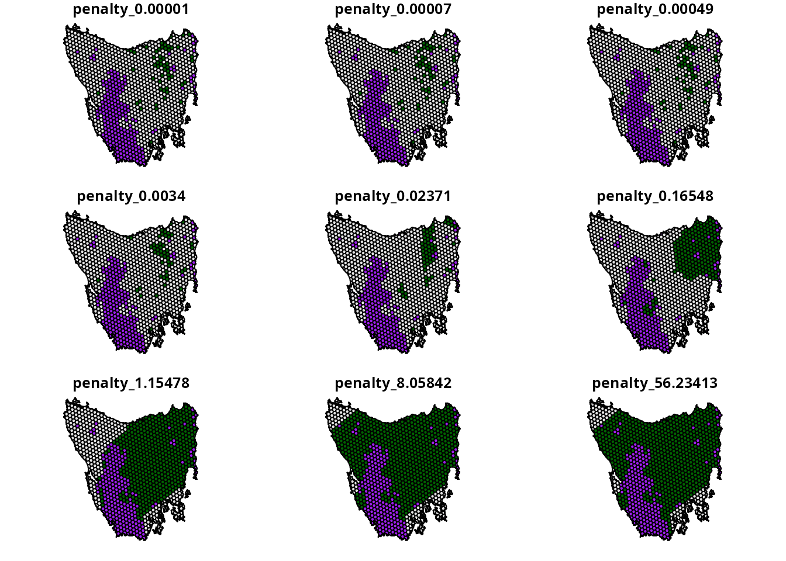

Calibrating trade-offs tutorial
Source:vignettes/calibrating_trade-offs_tutorial.Rmd
calibrating_trade-offs_tutorial.RmdIntroduction
Systematic conservation planning requires making trade-offs (Margules & Pressey 2000; Vane-Wright et al. 1991). Since different criteria may conflict with one another – or not align perfectly – prioritizations need to make trade-offs between different criteria (Klein et al. 2013). Although some criteria can easily be accounted for by using locked constraints or representation targets (e.g., Dorji et al. 2020; Hermoso et al. 2018), this is not always the case (e.g., Beger et al. 2010). For example, prioritizations often need to balance overall cost with the overall level spatial fragmentation among reserves (Hermoso et al. 2011; Stewart & Possingham 2005). Additionally, prioritizations often need to balance the overall level of connectivity among reserves against other criteria (Hermoso et al. 2012). Since the best trade-off depends on a range of factors – such as available budgets, species’ connectivity requirements, and management capacity – finding the best balance can be challenging.
The prioritizr R package provides multi-objective optimization methods to help identify the best trade-offs between different criteria. To achieve this, a conservation planning problem can be formulated with a primary objective (e.g., add_min_set_objective()) and penalties (e.g., add_boundary_penalties()) that relate to such criteria. When building the problem, the nature of the trade-offs can be specified using certain parameters (e.g., the penalty parameter of the add_boundary_penalties() function). To identify a prioritization that finds the best balance between different criteria, the trade-off parameters can be tuned using a calibration analysis. These analyses – in the context of systematic conservation planning – typically involve generating a set of candidate prioritizations based on different parameters, measuring their performance according to each of the criteria, and then selecting a prioritization (or set of prioritizations) based on how well they achieve the criteria (Hermoso et al. 2011; Stewart & Possingham 2005; Hermoso et al. 2012). For example, the Marxan decision support tool has a range of parameters (e.g., species penalty factors, boundary length modifier) that are calibrated to balance cost, species’ representation, and spatial fragmentation (Ardron et al. 2010).
The aim of this tutorial is to provide guidance on calibrating trade-offs when using the prioritizr R package. Here we will explore a couple of different approaches for generating candidate prioritizations, and methods for finding the best balance between different criteria. Specifically, we will try to generate prioritizations that strike the best balance between total cost and spatial fragmentation (measured as total boundary length). As such, the code used in this vignette will be directly applicable when performing a boundary length calibration analysis.
Data
Let’s load the packages and dataset used in this tutorial. Since this tutorial uses the prioritizrdata R package along with several other R packages (see below), please ensure that they are all installed. This particular dataset comprises two objects: tas_pu and tas_features. Although we will briefly describe this dataset below, please refer ?prioritizrdata::tas_data for further details.
# load packages
library(prioritizrdata)
library(prioritizr)
library(sf)
library(terra)
library(dplyr)
library(tibble)
library(ggplot2)
library(topsis)
library(withr)
# set seed for reproducibility
set.seed(500)
# load planning unit data
tas_pu <- get_tas_pu()
print(tas_pu)## Simple feature collection with 1130 features and 4 fields
## Geometry type: MULTIPOLYGON
## Dimension: XY
## Bounding box: xmin: 298809.6 ymin: 5167775 xmax: 613818.8 ymax: 5502544
## Projected CRS: WGS 84 / UTM zone 55S
## [38;5;246m# A tibble: 1,130 × 5[39m
## id cost locked_in locked_out geom
## [3m[38;5;246m<int>[39m[23m [3m[38;5;246m<dbl>[39m[23m [3m[38;5;246m<lgl>[39m[23m [3m[38;5;246m<lgl>[39m[23m [3m[38;5;246m<MULTIPOLYGON [m]>[39m[23m
## [38;5;250m 1[39m 1 60.2 FALSE TRUE (((328497 5497704, 326783.8 5500050, 326775…
## [38;5;250m 2[39m 2 19.9 FALSE FALSE (((307121.6 5490487, 305344.4 5492917, 3053…
## [38;5;250m 3[39m 3 59.7 FALSE TRUE (((321726.1 5492382, 320111 5494593, 320127…
## [38;5;250m 4[39m 4 32.4 FALSE FALSE (((304314.5 5494324, 304342.2 5494287, 3043…
## [38;5;250m 5[39m 5 26.2 FALSE FALSE (((314958.5 5487057, 312336 5490646, 312339…
## [38;5;250m 6[39m 6 51.3 FALSE FALSE (((327904.3 5491218, 326594.6 5493012, 3284…
## [38;5;250m 7[39m 7 32.3 FALSE FALSE (((308194.1 5481729, 306601.2 5483908, 3066…
## [38;5;250m 8[39m 8 38.4 FALSE FALSE (((322792.7 5483624, 319965.3 5487497, 3199…
## [38;5;250m 9[39m 9 3.55 FALSE FALSE (((334896.6 5490731, 335610.4 5492490, 3357…
## [38;5;250m10[39m 10 1.83 FALSE FALSE (((356377.1 5487952, 353903.1 5487635, 3538…
## [38;5;246m# ℹ 1,120 more rows[39m# load feature data
tas_features <- get_tas_features()
print(tas_features)## class : SpatRaster
## dimensions : 398, 359, 33 (nrow, ncol, nlyr)
## resolution : 1000, 1000 (x, y)
## extent : 288801.7, 647801.7, 5142976, 5540976 (xmin, xmax, ymin, ymax)
## coord. ref. : WGS 84 / UTM zone 55S (EPSG:32755)
## source : tas_features.tif
## names : Banks~lands, Bould~marks, Calli~lands, Cool ~orest, Eucal~hyll), Eucal~torey, ...
## min values : 0, 0, 0, 0, 0, 0, ...
## max values : 1, 1, 1, 1, 1, 1, ...The tas_pu object contains planning units represented as spatial polygons (i.e., converted to a sf::st_sf() object). This object has three columns that denote the following information for each planning unit: a unique identifier (id), unimproved land value (cost), and current conservation status (locked_in). Specifically, the conservation status column indicates if at least half the area planning unit is covered by existing protected areas (denoted by a value of 1) or not (denoted by a value of zero).
# plot map of planning unit costs
plot(tas_pu[, "cost"])
# plot map of planning unit statuses
plot(tas_pu[, "locked_in"])The tas_features object describes the spatial distribution of different vegetation communities (using presence/absence data). We will use the vegetation communities as the biodiversity features for the prioritization.
# plot map of the first four vegetation classes
plot(tas_features[[1:4]])We can use this dataset to generate a prioritization. Specifically, we will use the minimum set objective so that the optimization process minimizes total cost. We will add representation targets to ensure that prioritizations cover 17% of each vegetation community. Additionally, we will add constraints to ensure that planning units covered by existing protected areas are selected (i.e., locked in). Finally, we will specify that the conservation planning exercise involves binary decisions (i.e., selecting or not selecting planning units for protected area establishment).
# define a problem
p0 <-
problem(tas_pu, tas_features, cost_column = "cost") %>%
add_min_set_objective() %>%
add_relative_targets(0.17) %>%
add_locked_in_constraints("locked_in") %>%
add_binary_decisions()
# print problem
print(p0)## A conservation problem ([34m<ConservationProblem>[39m)
## [36m├•data[39m
## [36m│├•[39mfeatures: [34m"Banksia woodlands"[39m , … (33 total)
## [36m│└•[39mplanning units:
## [36m│[39m [36m├•[39mdata: [34m<sftbl_dftbldata.frame>[39m (1130 total)
## [36m│[39m [36m├•[39mcosts: continuous values (between [34m0.1925[39m and [34m61.9273[39m)
## [36m│[39m [36m├•[39mextent: [34m298809.5764[39m, [34m5167774.5993[39m, [34m613818.7743[39m, [34m5502543.7119[39m (xmin, ymin, xmax, ymax)
## [36m│[39m [36m└•[39mCRS: WGS 84 / UTM zone 55S (projected)
## [36m├•formulation[39m
## [36m│├•[39mobjective: minimum set objective
## [36m│├•[39mpenalties: [38;5;249mnone specified[39m
## [36m│├•[39mtargets: relative targets (between [34m0.17[39m and [34m0.17[39m)
## [36m│├•[39mconstraints:
## [36m││└•[39m1: locked in constraints (257 planning units)
## [36m│└•[39mdecisions: binary decision
## [36m└•optimization[39m
## [36m├•[39mportfolio: shuffle portfolio (`number_solutions` = [34m1[39m, …)
## [36m└•[39msolver: gurobi solver (`gap` = [34m0.1[39m, `time_limit` = [34m2147483647[39m, `first_feasible` = [34mFALSE[39m, …)
## [90m# ℹ Use `summary(...)` to see complete formulation.[39m# solve problem
s0 <- solve(p0)## Set parameter Username
## Set parameter TimeLimit to value 2147483647
## Set parameter MIPGap to value 0.1
## Set parameter Presolve to value 2
## Set parameter Threads to value 1
## Academic license - for non-commercial use only - expires 2025-04-21
## Gurobi Optimizer version 11.0.1 build v11.0.1rc0 (linux64 - "Ubuntu 22.04.4 LTS")
##
## CPU model: 11th Gen Intel(R) Core(TM) i7-1185G7 @ 3.00GHz, instruction set [SSE2|AVX|AVX2|AVX512]
## Thread count: 4 physical cores, 8 logical processors, using up to 1 threads
##
## Optimize a model with 33 rows, 1130 columns and 8157 nonzeros
## Model fingerprint: 0x09e16ac8
## Variable types: 0 continuous, 1130 integer (1130 binary)
## Coefficient statistics:
## Matrix range [2e-06, 6e+01]
## Objective range [2e-01, 6e+01]
## Bounds range [1e+00, 1e+00]
## RHS range [2e-01, 2e+03]
## Found heuristic solution: objective 10059.047375
## Presolve removed 19 rows and 354 columns
## Presolve time: 0.00s
## Presolved: 14 rows, 776 columns, 2296 nonzeros
## Variable types: 0 continuous, 776 integer (776 binary)
## Found heuristic solution: objective 9107.7729975
##
## Explored 0 nodes (0 simplex iterations) in 0.01 seconds (0.01 work units)
## Thread count was 1 (of 8 available processors)
##
## Solution count 2: 9107.77 10059
##
## Optimal solution found (tolerance 1.00e-01)
## Best objective 9.107772997535e+03, best bound 8.496084047117e+03, gap 6.7161%# print result
print(s0)## Simple feature collection with 1130 features and 5 fields
## Geometry type: MULTIPOLYGON
## Dimension: XY
## Bounding box: xmin: 298809.6 ymin: 5167775 xmax: 613818.8 ymax: 5502544
## Projected CRS: WGS 84 / UTM zone 55S
## [38;5;246m# A tibble: 1,130 × 6[39m
## id cost locked_in locked_out solution_1 geom
## [3m[38;5;246m<int>[39m[23m [3m[38;5;246m<dbl>[39m[23m [3m[38;5;246m<lgl>[39m[23m [3m[38;5;246m<lgl>[39m[23m [3m[38;5;246m<dbl>[39m[23m [3m[38;5;246m<MULTIPOLYGON [m]>[39m[23m
## [38;5;250m 1[39m 1 60.2 FALSE TRUE 0 (((328497 5497704, 326783.8 5500…
## [38;5;250m 2[39m 2 19.9 FALSE FALSE 0 (((307121.6 5490487, 305344.4 54…
## [38;5;250m 3[39m 3 59.7 FALSE TRUE 0 (((321726.1 5492382, 320111 5494…
## [38;5;250m 4[39m 4 32.4 FALSE FALSE 0 (((304314.5 5494324, 304342.2 54…
## [38;5;250m 5[39m 5 26.2 FALSE FALSE 0 (((314958.5 5487057, 312336 5490…
## [38;5;250m 6[39m 6 51.3 FALSE FALSE 0 (((327904.3 5491218, 326594.6 54…
## [38;5;250m 7[39m 7 32.3 FALSE FALSE 0 (((308194.1 5481729, 306601.2 54…
## [38;5;250m 8[39m 8 38.4 FALSE FALSE 0 (((322792.7 5483624, 319965.3 54…
## [38;5;250m 9[39m 9 3.55 FALSE FALSE 0 (((334896.6 5490731, 335610.4 54…
## [38;5;250m10[39m 10 1.83 FALSE FALSE 0 (((356377.1 5487952, 353903.1 54…
## [38;5;246m# ℹ 1,120 more rows[39m# create column for making a map of the prioritization
s0$map_1 <- case_when(
s0$locked_in > 0.5 ~ "locked in",
s0$solution_1 > 0.5 ~ "priority",
TRUE ~ "other"
)
# plot map of prioritization
plot(
s0[, "map_1"], pal = c("purple", "grey90", "darkgreen"),
main = NULL, key.pos = 1
)We can see that the priority areas identified by the prioritization are scattered across the study area (shown in green). Indeed, none of the priority areas are connected to existing protected areas (shown in purple), and very of them are connected with other priority areas. As such, the prioritization has a high level of spatial fragmentation. If it is important to avoid such levels of spatial fragmentation, then we will need to explicitly account for spatial fragmentation in the optimization process.
Preliminary processing
We need to conduct some preliminary processing procedures to prepare the data for subsequent analysis. This is important to help make it easier to find suitable trade-off parameters, and avoid numerical scaling issues that can result in overly long run times (see presolve_check() for further information). These processing steps are akin to data scaling (or normalization) procedures that are applied in statistical analysis to improve model convergence.
The first processing procedure involves setting the cost values for all locked in planning units to zero. This is so that the total cost estimates of the prioritization reflects the total cost of establishing new protected areas – not just total land value. In other words, we want the total cost estimate for a prioritization to reflect the cost of implementing conservation actions. This procedure is especially important when using the hierarchical approach described below, so that cost thresholds are based on percentage increases in the cost of establishing new protected areas.
# set costs for planning units covered by existing protected areas to zero
tas_pu$cost[tas_pu$locked_in > 0.5] <- 0
# plot map of planning unit costs
plot(tas_pu[, "cost"])
The second procedure involves pre-computing the boundary length data and manually re-scaling the boundary length values. This procedure is important because boundary length values are often very high, which can cause numerical issues that result in excessive run times (see presolve_check() for further details).
# generate boundary length data for the planning units
tas_bd <- boundary_matrix(tas_pu)
# manually re-scale the boundary length values
tas_bd <- rescale_matrix(tas_bd)After applying these procedures, our data is ready for subsequent analysis.
Generating candidate prioritizations
Here we will start the calibration analysis by generating a set of candidate prioritizations. Specifically, these prioritizations will be generated using different parameters to specify different trade-offs between the different criteria. Since this tutorial involves navigating trade-offs between the overall cost of a prioritization and the level of spatial fragmentation associated with a prioritization (as measured by total boundary length), we will generate prioritizations using different parameters related to these criteria. We will examine two approaches for generating candidate prioritizations based on multi-objective optimization procedures. Although we’ll be examining both approaches in this tutorial, you would normally only use one of these approaches when conducting your own analysis
Blended approach
The blended approach for multi-objective optimization involves combining separate criteria (e.g., total cost and total boundary length) into a single joint criterion. To achieve this, a trade-off (or scaling) parameter is used to specify the relative importance of each criterion. This approach is the default approach provided by the prioritizr R package. Specifically, each of the functions for adding a penalty to a problem formulation (e.g., add_boundary_penalties()) contains a parameter to control the relative importance of the penalties (i.e., the penalty parameter). For example, when using the add_boundary_penalties() function, setting a high penalty value will indicate that it is important to reduce the overall exposed boundary (perimeter) of the prioritization.
The main challenge with the blended approach is identifying a range of suitable penalty values to generate candidate prioritizations. If we set a penalty value that is too low, then the penalties will have no effect (e.g., boundary length penalties would have no effect on the prioritization). If we set a penalty value too high, then the prioritization will effectively ignore the primary objective. In such cases, the prioritization will be overly spatially clustered – because the planning unit cost values have no effect — and contain a single reserve. Thus we need to find a suitable range of penalty values before we can generate a set of candidate prioritizations.
We can find a suitable range of penalty values by generating a set of preliminary prioritizations. These preliminary prioritizations will be based on different penalty values – similar to the process for generating the candidate prioritizations – but solved using customized settings that sacrifice optimality for fast run times (see below for details). This is especially important because specifying a penalty value that is too high will cause the optimization process to take a very long time to generate a solutions (due to the numerical scaling issues mentioned previously). To find a suitable range of penalty values, we need to identify an upper limit for the penalty value (i.e., the highest penalty value that result in a prioritization containing a single reserve). Let’s create some preliminary penalty to identify this upper limit. Please note that you might need to adjust the prelim_upper value to find the upper limit when analyzing different datasets.
# define a range of different penalty values
## note that we use a power scale to avoid focusing on very high penalty values
prelim_lower <- -5 # change this for your own data
prelim_upper <- 1.75 # change this for your own data
prelim_penalty <- round(10^seq(prelim_lower, prelim_upper, length.out = 9), 5)
# print penalty values
print(prelim_penalty)## [1] 0.00001 0.00007 0.00049 0.00340 0.02371 0.16548 1.15478 8.05842
## [9] 56.23413Next, let’s use the preliminary penalty values to generate preliminary prioritizations. As mentioned earlier, we will generate these preliminary prioritizations using customized settings to reduce runtime. Specifically, we will set a time limit of 10 minutes per run, and relax the optimality gap to 20%. Although we would not normally use such settings – because the resulting prioritizations are not guaranteed to be near-optimal (the default gap is 10%) – this is fine because our goal here is to tune the preliminary penalty values. Indeed, none of these preliminary prioritizations will be considered as candidate prioritizations. Please note that you might need to set a higher time limit, or relax the optimality gap even further (e.g., 40%) when analyzing larger datasets.
# define a problem without boundary penalties
p0 <-
problem(tas_pu, tas_features, cost_column = "cost") %>%
add_min_set_objective() %>%
add_relative_targets(0.17) %>%
add_locked_in_constraints("locked_in") %>%
add_binary_decisions()
# generate preliminary prioritizations based on each penalty
## note that we specify a relaxed gap and time limit for the solver
prelim_blended_results <- lapply(prelim_penalty, function(x) {
s <-
p0 %>%
add_boundary_penalties(penalty = x, data = tas_bd) %>%
add_default_solver(gap = 0.2, time_limit = 10 * 60) %>%
solve()
s <- data.frame(s = s$solution_1)
names(s) <- with_options(list(scipen = 30), paste0("penalty_", x))
s
})
# format results as a single spatial object
prelim_blended_results <- cbind(
tas_pu, do.call(bind_cols, prelim_blended_results)
)
# preview results
print(prelim_blended_results)After generating the preliminary prioritizations, let’s create some maps to visualize them. In particular, we want to understand how different penalty values influence the spatial fragmentation of the prioritizations.
# plot maps of prioritizations
plot(
x =
prelim_blended_results %>%
dplyr::select(starts_with("penalty_")) %>%
mutate_if(is.numeric, function(x) {
case_when(
prelim_blended_results$locked_in > 0.5 ~ "locked in",
x > 0.5 ~ "priority",
TRUE ~ "other"
)
}),
pal = c("purple", "grey90", "darkgreen")
)
We can see that as the penalty value used to generate the prioritizations increases, the spatial fragmentation of the prioritizations decreases. In particular, we can see that a penalty value of 56.23413 results in a single reserve – meaning this is our best guess of the upper limit. Using this penalty value as an upper limit, we will now generate a second series of prioritizations that will be the candidate prioritizations. Critically, these candidate prioritizations will not be generated using with time limit and be generated using a more suitable gap (i.e., default gap of 10%).
# define a new set of penalty values
penalty <- round(10^seq(-5, log10(prelim_penalty[9]), length.out = 9), 5)
# generate prioritizations based on each penalty
blended_results <- lapply(penalty, function(x) {
## generate solution
s <-
p0 %>%
add_boundary_penalties(penalty = x, data = tas_bd) %>%
solve()
## return data frame with solution
s <- data.frame(s = s$solution_1)
names(s) <- with_options(list(scipen = 30), paste0("penalty_", x))
s
})
# format results as a single spatial object
blended_results <- cbind(tas_pu, do.call(bind_cols, blended_results))
# plot maps of prioritizations
plot(
x =
blended_results %>%
dplyr::select(starts_with("penalty_")) %>%
mutate_if(is.numeric, function(x) {
case_when(
blended_results$locked_in > 0.5 ~ "locked in",
x > 0.5 ~ "priority",
TRUE ~ "other"
)
}),
pal = c("purple", "grey90", "darkgreen")
)
We now have a set of candidate prioritizations generated using the blended approach. The main advantages of this approach is that it is similar calibration analyses used by other decision support tools for conservation (i.e., Marxan) and it is relatively straightforward to implement. However, this approach also has a key disadvantage. Because the penalty parameter is a unitless trade-off parameter – meaning that we can’t leverage existing knowledge to specify a suitable range of penalty values – we first have to conduct a preliminary analysis to identify an upper limit. Although finding an upper limit was fairly simple for the example dataset, it can be difficult to find for more realistic data. In the next section, we will show how to generate a set of candidate prioritizations using the hierarchical approach – which does not have this disadvantage.
Hierarchical approach
The hierarchical approach for multi-objective optimization involves generating a series of incremental prioritizations – using a different objective at each increment to refine the previous solution – until the final solution achieves all of the objectives. The advantage with this approach is that we can specify trade-off parameters for each objective based on a percentage from optimality. This means that we can leverage our own knowledge – or that of decision maker – to generate a range of suitable trade-off parameters. As such, this approach does not require us to generate a series of preliminary prioritizations.
This approach is slightly more complicated to implement within the prioritizr R package then the blended approach. To start off, we generate an initial prioritization based on a problem formulation that does not consider any penalties. Critically, we will generate this prioritization by solving the problem to optimality (using the gap parameter of the add_default_solver() function).
# define a problem without boundary penalties
p1 <-
problem(tas_pu, tas_features, cost_column = "cost") %>%
add_min_set_objective() %>%
add_relative_targets(0.17) %>%
add_locked_in_constraints("locked_in") %>%
add_binary_decisions() %>%
add_default_solver(gap = 0)
# solve problem
s1 <- solve(p1)
# add column for making a map of the prioritization
s1$map_1 <- case_when(
s1$locked_in > 0.5 ~ "locked in",
s1$solution_1 > 0.5 ~ "priority",
TRUE ~ "other"
)
# plot map of prioritization
plot(
s1[, "map_1"], pal = c("purple", "grey90", "darkgreen"),
main = NULL, key.pos = 1
)Next, we will calculate the total cost of the initial prioritization.
# calculate cost
s1_cost <- eval_cost_summary(p1, s1[, "solution_1"])$cost
# print cost
print(s1_cost)## [1] 354.3258Now we will calculate a series of cost thresholds. These cost thresholds will be calculated by inflating the cost of the initial prioritization by a range of percentage values. Since these values are percentages – and not unitless values unlike those used in the blended approach – we can use domain knowledge to specify a suitable range of cost thresholds. For this tutorial, let’s assume that it would be impractical – per our domain knowledge – to expend more than four times the total cost of the initial prioritization to reduce spatial fragmentation.
# calculate cost threshold values
threshold <- s1_cost + (s1_cost * seq(1e-5, 4, length.out = 9))
threshold <- ceiling(threshold)
# print cost thresholds
print(threshold)## [1] 355 532 709 886 1063 1241 1418 1595 1772After generating the cost thresholds, we can use them to generate prioritizations. Specifically, we will generate prioritizations that aim to minimize total boundary length as much as possible – ignoring the total cost of the prioritizations – whilst ensuring that the total cost of the prioritization does not exceed a given cost threshold and the other considerations (e.g., locked in constraints). To achieve this, we create a new column in the tas_pu object that contains only zero values (called zeros) and use this new column to specify the cost data for the prioritizations. Although we normally recommend against cost data that contain zero values – because planning units with zero costs are often selected in prioritizations even if they are not needed – here we use zero cost values so that the prioritization will focus exclusively on spatial fragmentation. Additionally, when it comes to generating the prioritization, we will add linear constraints to ensure that the total cost of the prioritization does not exceed a given cost threshold (using the add_linear_constraints() function).
# add a column with zeros
tas_pu$zeros <- 0
# define a problem with zero cost values and boundary penalties
## note that because all the costs are all zero, it doesn't actually
## matter what penalty value is used (as long as the value is > 0)
## and so we just use a value of 1
p2 <-
problem(tas_pu, tas_features, cost_column = "zeros") %>%
add_min_set_objective() %>%
add_boundary_penalties(penalty = 1, data = tas_bd) %>%
add_relative_targets(0.17) %>%
add_locked_in_constraints("locked_in") %>%
add_binary_decisions()## Warning: [1m[22m`x[, cost_column]` has only zero values.# generate prioritizations based on each cost threshold
## note that the prioritizations are solved to within 10% of optimality
## (the default gap) because the gap is not specified
hierarchical_results <- lapply(threshold, function(x) {
## generate solution by adding a constraint based on the threshold and
## using the "real" cost values (i.e., not zeros)
s <-
p2 %>%
add_linear_constraints(threshold = x, sense = "<=", data = "cost") %>%
solve()
## return data frame with solution
s <- data.frame(s = s$solution_1)
names(s) <- paste0("threshold_", x)
s
})
# format results as a single spatial object
hierarchical_results <- cbind(tas_pu, do.call(bind_cols, hierarchical_results))
# plot maps of prioritizations
plot(
x =
hierarchical_results %>%
dplyr::select(starts_with("threshold_")) %>%
mutate_if(is.numeric, function(x) {
case_when(
hierarchical_results$locked_in > 0.5 ~ "locked in",
x > 0.5 ~ "priority",
TRUE ~ "other"
)
}),
pal = c("purple", "grey90", "darkgreen")
)
We now have a set of candidate prioritizations generated using the hierarchical approach. This approach can be much faster than the blended approach because it does not require generating a set of prioritizations to identify an upper limit for the penalty trade-off parameter. After generating a set of candidate prioritizations, we can then calculate performance metrics to compare the prioritizations.
Calculating performance metrics
Here we will calculate performance metrics to compare the prioritizations. Since we aim to navigate trade-offs between the total cost of a prioritization and the overall level of spatial fragmentation associated with a prioritization (as measured by total boundary length), we will calculate metrics to assess these criteria. Although we generated two sets of candidate prioritizations in the previous section; for brevity, here we will consider the candidate prioritizations generated using the hierarchical approach. Please note that you could also apply the following procedures to candidate prioritizations generated using the blended approach.
# calculate metrics for prioritizations
## note that we use p0 and not p1 so that cost calculations are based
## on the cost values and not zeros
hierarchical_metrics <- lapply(
grep("threshold_", names(hierarchical_results)), function(x) {
x <- hierarchical_results[, x]
data.frame(
total_cost = eval_cost_summary(p0, x)$cost,
total_boundary_length = eval_boundary_summary(p0, x)$boundary
)
}
)
hierarchical_metrics <- do.call(bind_rows, hierarchical_metrics)
hierarchical_metrics$threshold <- threshold
hierarchical_metrics <- as_tibble(hierarchical_metrics)
# preview metrics
print(hierarchical_metrics)## [38;5;246m# A tibble: 9 × 3[39m
## total_cost total_boundary_length threshold
## [3m[38;5;246m<dbl>[39m[23m [3m[38;5;246m<dbl>[39m[23m [3m[38;5;246m<dbl>[39m[23m
## [38;5;250m1[39m 355. 2[4m8[24m[4m5[24m[4m7[24m041. 355
## [38;5;250m2[39m 528. 2[4m3[24m[4m0[24m[4m0[24m878. 532
## [38;5;250m3[39m 706. 2[4m1[24m[4m2[24m[4m9[24m475. 709
## [38;5;250m4[39m 880. 2[4m0[24m[4m1[24m[4m2[24m381. 886
## [38;5;250m5[39m [4m1[24m061. 1[4m9[24m[4m4[24m[4m5[24m769. [4m1[24m063
## [38;5;250m6[39m [4m1[24m240. 1[4m8[24m[4m8[24m[4m9[24m002. [4m1[24m241
## [38;5;250m7[39m [4m1[24m415. 1[4m8[24m[4m2[24m[4m8[24m894. [4m1[24m418
## [38;5;250m8[39m [4m1[24m594. 1[4m7[24m[4m8[24m[4m6[24m337. [4m1[24m595
## [38;5;250m9[39m [4m1[24m769. 1[4m7[24m[4m3[24m[4m0[24m507. [4m1[24m772After calculating the metrics, let’s we can use them to help select a prioritization.
Selecting a prioritization
Now we need to decide on which candidate prioritization achieves the best trade-off. There are a range of qualitative and quantitative methods that are available to select a candidate prioritization (Ardron et al. 2010). Here we will consider three different methods. Since some of these methods use a set of candidate prioritizations, we will use the candidate prioritizations using the hierarchical approach for these methods. To keep track of the prioritizations selected by different methods, let’s create a results_data table.
# create data for plotting
result_data <-
hierarchical_metrics %>%
## rename threshold column to value column
rename(value = "threshold") %>%
## add column with column names that contain candidate prioritizations
mutate(name = grep(
"threshold_", names(hierarchical_results), value = TRUE, fixed = TRUE
)) %>%
## add column with labels for plotting
mutate(label = paste("Threshold =", value)) %>%
## add column to keep track prioritizations selected by different methods
mutate(method = "none")
# print table
print(result_data)## [38;5;246m# A tibble: 9 × 6[39m
## total_cost total_boundary_length value name label method
## [3m[38;5;246m<dbl>[39m[23m [3m[38;5;246m<dbl>[39m[23m [3m[38;5;246m<dbl>[39m[23m [3m[38;5;246m<chr>[39m[23m [3m[38;5;246m<chr>[39m[23m [3m[38;5;246m<chr>[39m[23m
## [38;5;250m1[39m 355. 2[4m8[24m[4m5[24m[4m7[24m041. 355 threshold_355 Threshold = 355 none
## [38;5;250m2[39m 528. 2[4m3[24m[4m0[24m[4m0[24m878. 532 threshold_532 Threshold = 532 none
## [38;5;250m3[39m 706. 2[4m1[24m[4m2[24m[4m9[24m475. 709 threshold_709 Threshold = 709 none
## [38;5;250m4[39m 880. 2[4m0[24m[4m1[24m[4m2[24m381. 886 threshold_886 Threshold = 886 none
## [38;5;250m5[39m [4m1[24m061. 1[4m9[24m[4m4[24m[4m5[24m769. [4m1[24m063 threshold_1063 Threshold = 1063 none
## [38;5;250m6[39m [4m1[24m240. 1[4m8[24m[4m8[24m[4m9[24m002. [4m1[24m241 threshold_1241 Threshold = 1241 none
## [38;5;250m7[39m [4m1[24m415. 1[4m8[24m[4m2[24m[4m8[24m894. [4m1[24m418 threshold_1418 Threshold = 1418 none
## [38;5;250m8[39m [4m1[24m594. 1[4m7[24m[4m8[24m[4m6[24m337. [4m1[24m595 threshold_1595 Threshold = 1595 none
## [38;5;250m9[39m [4m1[24m769. 1[4m7[24m[4m3[24m[4m0[24m507. [4m1[24m772 threshold_1772 Threshold = 1772 noneNext, let’s examine some different methods for selecting prioritizations.
Visual method
One qualitative method involves plotting the relationship between the different criteria, and using the plot to visually select a candidate prioritization. This visual method is often used to help calibrate trade-offs among prioritizations generated using the Marxan decision support tool (e.g., Hermoso et al. 2011; Stewart & Possingham 2005). So, let’s create a plot to select a prioritization.
# create plot to visualize trade-offs and show selected candidate prioritization
result_plot <-
ggplot(
data = result_data,
aes(x = total_boundary_length, y = total_cost, label = label)
) +
geom_line() +
geom_point(size = 3) +
geom_text(hjust = -0.15) +
scale_color_manual(
values = c("visual" = "blue", "not selected" ="black")
) +
xlab("Total boundary length of prioritization") +
ylab("Total cost of prioritization") +
scale_x_continuous(expand = expansion(mult = c(0.05, 0.4))) +
theme(legend.title = element_blank())
# render plot
print(result_plot)## Warning: [1m[22mNo shared levels found between `names(values)` of the manual scale and the
## data's [32mcolour[39m values.
We can see that there is a clear relationship between total cost and total boundary length. It would seem that in order to achieve a lower total boundary length – and thus lower spatial fragmentation – the prioritization must have a greater cost. Although we might expect the results to show a smoother curve – in other words, only Pareto dominant solutions – this result is expected because we generated candidate prioritizations using the default optimality gap of 10%. Typically, the visual method involves selecting a prioritization near the elbow of the plot. So, let’s select the prioritization generated using a threshold value of 709. To keep track of the prioritizations selected based on different methods, let’s create a method column in the result_data table.
# specify prioritization selected by visual method
result_data$method[3] <- "visual"Next, let’s consider a quantitative approach.
TOPSIS method
Multiple-criteria decision analysis is a discipline that uses analytical methods to evaluate trade-offs between multiple criteria (MCDA; reviewed in Greene et al. 2011). Although this discipline contains many different methods, here we will use the the Technique for Order of Preference by Similarity to Ideal Solution (TOPSIS) method (Hwang & Yoon 1981). This method requires (i) data describing the performance of each prioritization according to the different criteria, (ii) weights to encode the relative importance of each criteria, and (iii) details on whether each criteria should ideally be minimized or maximized. Let’s run the analysis, assuming that we want equal weighting for total cost and total boundary length.
# calculate TOPSIS scores
topsis_results <- topsis(
decision =
hierarchical_metrics %>%
dplyr::select(total_cost, total_boundary_length) %>%
as.matrix(),
weights = c(1, 1),
impacts = c("-", "-")
)
# print results
print(topsis_results)## alt.row score rank
## 1 1 0.6932024 3
## 2 2 0.7799874 1
## 3 3 0.7324922 2
## 4 4 0.6470149 4
## 5 5 0.5487497 5
## 6 6 0.4589904 6
## 7 7 0.3874544 7
## 8 8 0.3334158 8
## 9 9 0.3067976 9The candidate prioritization with the greatest TOPSIS score is considered to represent the best trade-off between total cost and total boundary length. So, based on this method, we would select the prioritization generated using a threshold value of 532. Let’s update the result_data with this information.
# add column indicating prioritization selected by TOPSIS method
result_data$method[which.max(topsis_results$score)] <- "TOPSIS"Next, let’s consider another quantitative method.
Cohon et al. (1979) method
This method is based on an algorithm that was originally developed by Cohon et al. (Cohon et al. 1979), and was later adapted for use in systematic conservation planning (Fischer & Church 2005). Specifically, it involves generating two ideal prioritizations – with each prioritization representing the ideal prioritization for each criteria – and then using the performance metrics calculated for these prioritizations to automatically derive a trade-off penalty value (Ardron et al. 2010; Cohon et al. 1979). Thus, unlike the two other methods, this method does not require a set of candidate prioritizations. As such, this method can be used to find a prioritization that meets multiple criteria in a much shorter period of time than the other methods. To implement this method, we first need to generate the ideal prioritizations (note that we specify an gap of 0% to ensure optimality).
# generate ideal prioritization based on cost criteria
## note that this is simply the same as the s1 prioritization we generated
## for the hierarchical approach
p3 <-
problem(tas_pu, tas_features, cost_column = "cost") %>%
add_min_set_objective() %>%
add_relative_targets(0.17) %>%
add_locked_in_constraints("locked_in") %>%
add_binary_decisions() %>%
add_default_solver(gap = 0)
# solve problem
s3 <- solve(p3)
# generate ideal prioritization based on spatial fragmentation criteria
## note that any non-zero penalty value would here,
## so we just use a penalty of 1
p4 <-
problem(tas_pu, tas_features, cost_column = "zeros") %>%
add_min_set_objective() %>%
add_boundary_penalties(penalty = 1, data = tas_bd) %>%
add_relative_targets(0.17) %>%
add_locked_in_constraints("locked_in") %>%
add_binary_decisions() %>%
add_default_solver(gap = 0)## Warning: [1m[22m`x[, cost_column]` has only zero values.# solve problem
s4 <- solve(p4)Next, let’s calculate the performance metrics for these prioritizations.
# generate problem formulation with costs and boundary penalties for
# calculating performance metrics
p5 <-
problem(tas_pu, tas_features, cost_column = "cost") %>%
add_min_set_objective() %>%
add_boundary_penalties(penalty = 1, data = tas_bd) %>%
add_relative_targets(0.17) %>%
add_locked_in_constraints("locked_in") %>%
add_binary_decisions()
# calculate performance metrics for ideal cost prioritization
s3_metrics <- tibble(
total_cost = eval_cost_summary(p5, s3[, "solution_1"])$cost,
total_boundary_length =
eval_boundary_summary(p5, s3[, "solution_1"])$boundary
)
# calculate performance metrics for ideal boundary length prioritization
s4_metrics <- tibble(
total_cost = eval_cost_summary(p5, s4[, "solution_1"])$cost,
total_boundary_length =
eval_boundary_summary(p5, s4[, "solution_1"])$boundary
)After calculating these performance metrics, we can use them to automatically calculate a penalty value.
# calculate penalty value based on Cohon et al. 1979
cohon_penalty <- abs(
(s3_metrics$total_cost - s4_metrics$total_cost) /
(s3_metrics$total_boundary_length - s4_metrics$total_boundary_length)
)
# round to 5 decimal places to avoid numerical issues during optimization
cohon_penalty <- round(cohon_penalty, 5)
# print penalty value
print(cohon_penalty)## [1] 0.00902Now that we have calculated a penalty value using this method, we can use it to generate a prioritization.
# generate prioritization using penalty value calculated using Cohon et al. 1979
p6 <-
problem(tas_pu, tas_features, cost_column = "cost") %>%
add_min_set_objective() %>%
add_boundary_penalties(penalty = cohon_penalty, data = tas_bd) %>%
add_relative_targets(0.17) %>%
add_locked_in_constraints("locked_in") %>%
add_binary_decisions()
# solve problem
s6 <- solve(p6)Let’s update the results_data table with results about the prioritization.
# add new row with data for prioritization generated following Cohon et al. 1979
result_data <- bind_rows(
result_data,
tibble(
total_cost = eval_cost_summary(p6, s6[, "solution_1"])$cost,
total_boundary_length =
eval_boundary_summary(p6, s6[, "solution_1"])$boundary,
value = cohon_penalty,
name = paste0("penalty_", cohon_penalty),
label = paste0("Penalty = ", cohon_penalty),
method = "Cohon"
)
)Next, let’s compare the prioritizations selected by different methods.
Method comparison
Let’s create a plot to visualize the results from the different methods.
# create plot to visualize trade-offs and show selected candidate prioritization
result_plot <-
ggplot(
data =
result_data %>%
mutate(vjust = if_else(method == "Cohon", -1, 0.5)),
aes(x = total_boundary_length, y = total_cost, label = label)
) +
geom_line() +
geom_point(aes(color = method), size = 3) +
geom_text(aes(vjust = vjust, color = method), hjust = -0.1) +
scale_color_manual(
name = "Method",
values = c(
"visual" = "#984ea3",
"none" = "#000000",
"TOPSIS" = "#e41a1c",
"Cohon" = "#377eb8"
)
) +
xlab("Total boundary length of prioritization") +
ylab("Total cost of prioritization") +
scale_x_continuous(expand = expansion(mult = c(0.05, 0.4)))
# render plot
print(result_plot)
We can see that the different methods selected different prioritizations. To further compare the results from the different methods, let’s create some maps showing the selected prioritizations.
# extract column names for creating the prioritizations
visual_name <- result_data$name[[which(result_data$method == "visual")]]
topsis_name <- result_data$name[[which(result_data$method == "TOPSIS")]]
# create object with selected prioritizations
solutions <- bind_cols(
tas_pu,
hierarchical_results %>%
st_drop_geometry() %>%
dplyr::select(all_of(c(visual_name, topsis_name))) %>%
setNames(c("Visual", "TOPSIS")),
s6 %>%
st_drop_geometry() %>%
dplyr::select(solution_1) %>%
rename(Cohon = "solution_1")
)
# plot maps of selected prioritizations
plot(
x =
solutions %>%
dplyr::select(Visual, TOPSIS, Cohon) %>%
mutate_if(is.numeric, function(x) {
case_when(
hierarchical_results$locked_in > 0.5 ~ "locked in",
x > 0.5 ~ "priority",
TRUE ~ "other"
)
}),
pal = c("purple", "grey90", "darkgreen")
)How do we determine which one is best? This is difficult to say. Ideally, additional information could be used to help select a prioritization, such as knowledge on available resources, species’ connectivity requirements, and impacts of neighboring land use. However, from a practical perspective, prioritizations generated for academic contexts might find the quantitative approaches more useful because they have greater transparency and reproducibility. Ultimately, all of these methods are designed to support decision making. This means that they are intended to assist the decision making process, not serve as a replacement.
Conclusion
Hopefully, this vignette has provided a useful introduction for resolving trade-offs in prioritizations. Although we only explored trade-offs between total cost and spatial fragmentation in this tutorial, this analysis could be adapted to explore trade-offs between a wide range of different criteria. For instance, instead of considering total cost as the primary objective, future analyses could explore trade-offs with feature representation (using the add_min_shortfall_objective() function). Additionally, instead of spatial fragmentation, future analyses could explore trade-offs that directly relate to connectivity (using the add_connectivity_penalties() function) or specific variables of interest – such as ecosystem intactness or inverse human footprint index (Williams et al. 2020; Beyer et al. 2019) – to inform decision making (using the add_linear_penalties() function). Furthermore, after identifying the best penalty or threshold values to strike a balance between multiple criteria, you could generate a portfolio of prioritizations (e.g., using the add_gap_portfolio_function()) to find multiple options for achieving a similar balance. This might be helpful when you need to generate a set of prioritizations that have comparable performance – in terms of how well they achieve different criteria – but select different planning units.